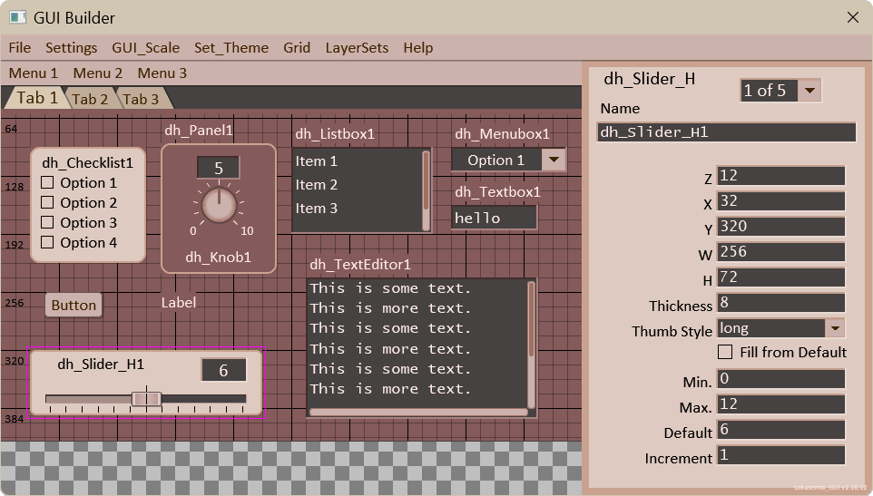
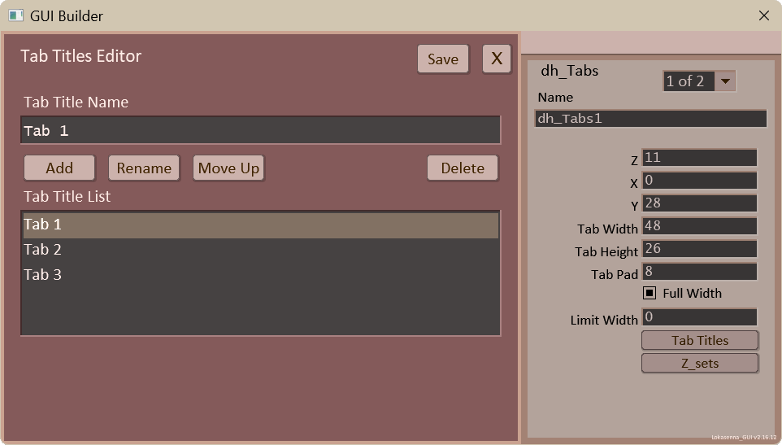
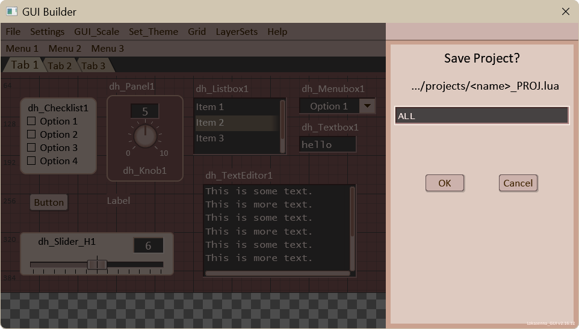
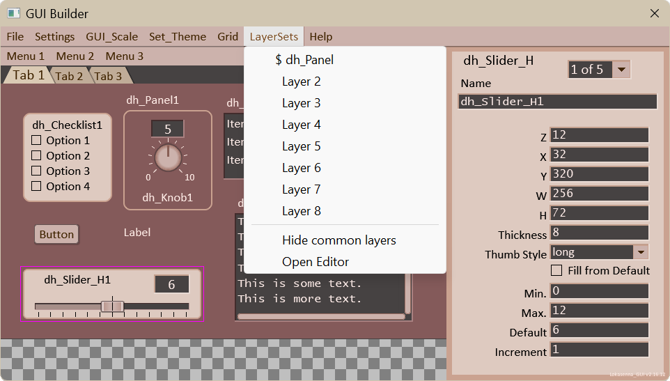
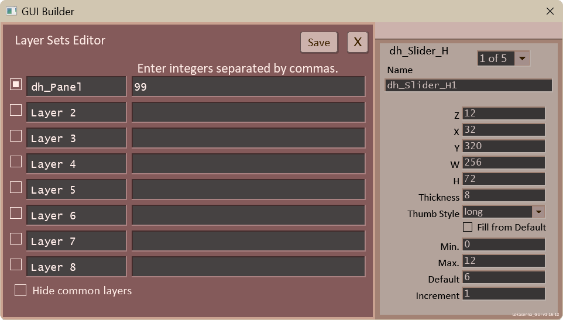
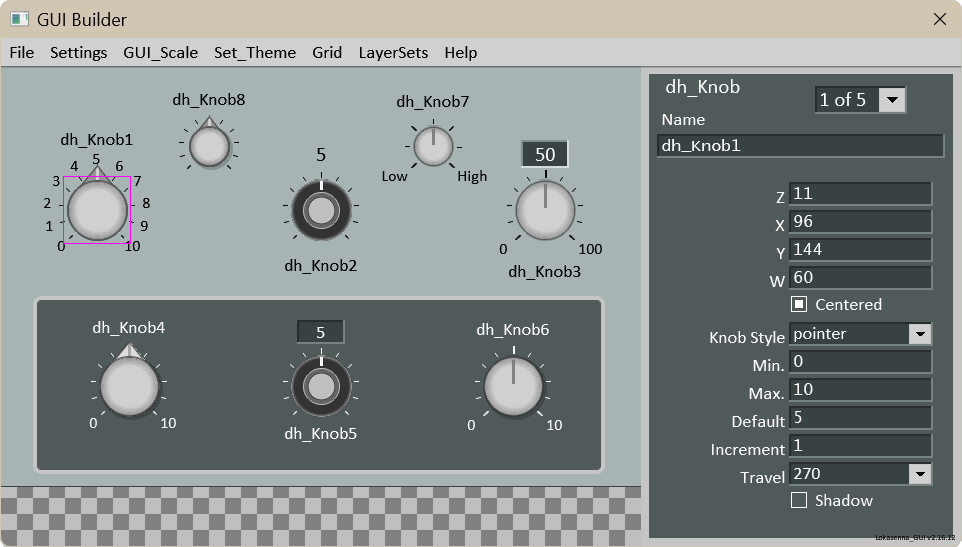
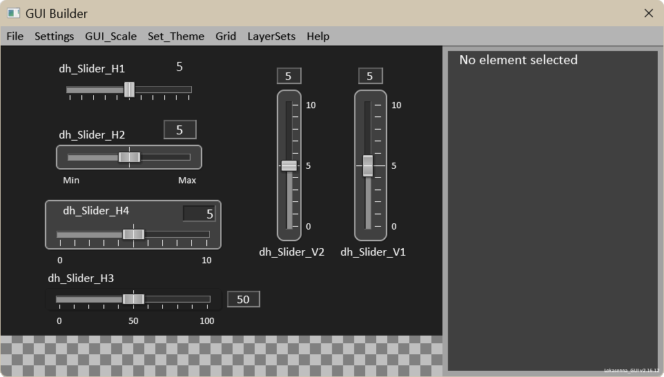

dh_GUI_Builder is used to build GUI's for scripts that utilize the Lokasenna GUI and dh_Toolkit. It consists of a workspace, a properties sidebar, and the top menubar. Layouts can be saved and reloaded. They can also be imported into a script.
dh_GUI_Builder projects include the name, width and height of the script window, etc. A project also includes all of the elements placed in the workspace.
A project can be saved as a 'project' file. This adds the suffix "_PROJ" to the name, and is saved in the "projects" directory. Projects can also be saved as an 'elements' file. It is basically the same file except the it adds the suffix "_ELMS", and is saved in the "scripts" directory where the script is stored. This allows it to be easily imported into the main script:
loadfile(GUI.script_path .. "dh_HearingTest_ELMS.lua")()
Presto! The elements are loaded and ready to go.
An individual element can be saved as a 'template' file. Say you have designed a slider with a configuration that you may want to use in another project. Use this to save it as a template. The file will have the element's name (unless you edited it), and will add the suffix "_TMPL" to it. It will be saved in the "projects" directory.
dh_GUI_Builder exposes almost all of an element's colors. While that allows them to be set individually, it is best to use the default color settings otherwise it breaks theming. Notable exceptions are panel colors of which the background is generally set to use either the window background or panel background color, along with their associated text colors. Also, an element's backdrop color also needs to correspond to the background color of where the element is placed. See dh_ThemeDesigner page "3.04 Colors Tab" for more about colors.
GUI Builder reserves layers 480-499 for its use. Do NOT place any elements on these layers.
The workspace represents the window of the target script. It is the area where the elements get placed. It has a grid that can be toggled on or off. You can set the name and the size of the project in 'Project Settings'.
Right-click on an empty space in the workspace to bring up a menu with all of the elements that are available. Select one and it will be created on layer 1 with its top-left at the mouse position (except for dh_Knob which as a default uses mouse position as center of knob). The right-click also works on a dh_Panel.
Right-click on a selected element to bring up the 'Delete Element' dialog. This action is disabled for dh_Panel as the panel may obscure most or all of the workspace. For dh_Panel (and all elements) you can still use the alternate method for deleting an element by using 'Alt+click'. You will be prompted to confirm delete.
Click on an element to select it for editing. When an element gets selected the Properties sidebar gets populated with all of the editable properties of the selected element.
Note: Clicking on an unselected element selects it. For most elements this also triggers the native behavior of the element. The exceptions are checklist and menubox as their native behavior would clash with GUI Builder functionality. On these elements the first click selects the item. A second click triggers its native behavior.
Middle-mouse button down on the selected element and drag it to a new location. You can also Shift+left mouse button to drag an element.
Tabs and Layer Sets: Tabs and layersets utilize sets of layers that can be toggled visible/hidden. Clicking on a tab shows the elements contained in that tab's set, and hides the layers of the other tabs' sets. Layersets behave similarly, except that the visibilty of the layersets is controlled by the script's code. See page "4.01 Example Workflow" Tabs section and Layer Sets section for further explanation.
When an element gets selected the Properties sidebar gets populated with all of the element's editable properties. At the top left is a label that shows the type of the selected element. Clicking on it will deselect the element.
Generally, more than one page is needed to display all of the properties. Therefore, a menubox will appear at the top of the sidebar with the property page numbers. Select a page to display the properties contained within it. While the script is open the current page will be remembered. That page will be displayed when reselecting the element.
The element's editable properties are shown in either a textbox, a menubox, a checklist, or with a button that opens an editor.
Selecting from a menubox instantly updates the element.
Checklists have boolean values. Toggling the option button updates the element.
For properties displayed in textboxes the element will be updated when clicking anywhere outside the textbox, or by clicking the Enter button. The entered value is first checked if is valid (a number, a color name, etc,). If it is not valid it will revert to its initial value.
Some properties that are tables display a button. Clicking the button opens an editor. Some editors are just basically supplying a wider textbox which makes it easier to enter data. The Tabs Titles Editor and the Tabs z_sets Editor are more detailed editors. The following image shows the Tabs Titles Editor.

File:
New Project: Creates a new project. This will replace the current project and workspace with a blank one. The current project will not be saved. You may want to save it first. You will be prompted to confirm. You can change the project name in 'Settings -> Project Settings'.
Load Project: Displays a list of any project files in the "projects" directory. Select one to load it. You will be prompted before clearing the workspace.
Save Project: Saves the current workspace to a file in the "projects" directory. The save dialog will appear in the sidebar. The 'name' box will show the name of the current project. Edit it if you wish. The file name will be the textbox name with "_PROJ.lua" appended to it. This option is suggested for saving projects during the development phase, or experimenting with different layouts.
Click 'Save': The current project will be saved as described above. If the project file already exists you will be prompted to overwrite it.
Load Elements File: Displays a list of files in the "scripts" directory. Select one to load it. You will be prompted before clearing the workspace.
Save Elements: Saves the current workspace to a file in the "scripts" directory. The save dialog will appear in the sidebar. The 'name' box will show the name of the current project. Edit it if you wish. The file name will be the textbox name with "_ELMS.lua" appended to it. This option should be used when your layout is ready to be added to your main script. Saving this way the elements file will be located alongside the main script making it more straightforward to import it into the main script.
Click 'Save': If the elements file already exists you will be prompted to overwrite it.
Import Template: Displays a list of any template files in the "projects" directory. Select one to load it. The element will be placed on layer 1. You can move it to another layer by changing its 'z' value.
Save Template: A template is a single element file. Say you have designed a slider with a configuration that you may want to use in another project. Use this to save it as a template. Saves the currently selected element to a file in the "projects" directory. The save dialog will appear in the sidebar. The 'name' box will show the name of the selected element. Edit it if you wish. The file name will be the textbox name with "_TMPL.lua" appended to it.
Click 'Save': If the template file already exists you will be prompted to overwrite it.

Settings:
Project Settings: Opens the 'Project Settings' window. Here you can change the project name, the x and y position where you want your script to open, the width and height of your script window, and docking state. Click 'Save' to save your settings.
"Scripts Directory" points to the location of the directory where the elements file is saved to when using "Save Elements". This should be the directory where your scripts are stored. It defaults to the recommended location within the "dh_Toolkit" directory. If for some reason you decide to run your scripts from elsewhere then this should point to that directory. The directory is relative to the GUI Builder directory. Edit it with caution. The default is "../scripts/".
Preferences: Opens the 'Preferences' window. Here you can turn grid snapping on or off, toggle grid show, set the grid size, and change the grid color. You can change the size of the grid text. You can also change the relative size of the font used by the GUI. I included the latter in case the system fonts display differently than the system the script was developed on.
Click 'Save' to save your settings.
GUI_Scale: Select a scale size from the drop-down menu to resize the entire GUI_Builder, including the workspace.
Set_Theme: Change the theme by selecting one from the drop-down menu. (As of 10-04-2026 user themes not yet supported.)
Grid: Click on the option to "Toggle Grid Show" to toggle the visibility of the grid.
LayerSets:
Help:
A layerset is a set of layers whose visibility can be toggled on or off. When a layerset is active the element's on that layerset's layers will be visible. There are eight layersets available. For each layerset the editor provides a checkbox, a 'name' testbox, and a 'set' textbox.
The checkbox allows you to toggle the visibility of that set. Checked is visible; unchecked is hidden.
The 'name' textbox allows you to edit the name of the layerset.
The 'set' textbox allows you to assign which layers are to be included in that set. Enter layer numbers separated with commas.
The Hide Common Layers checkbox allows you to toggle the visibility of the common layers (those which are not in any layerset).



